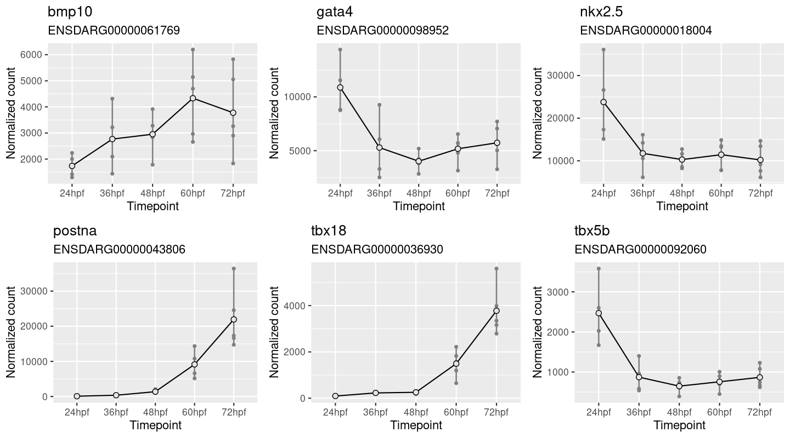
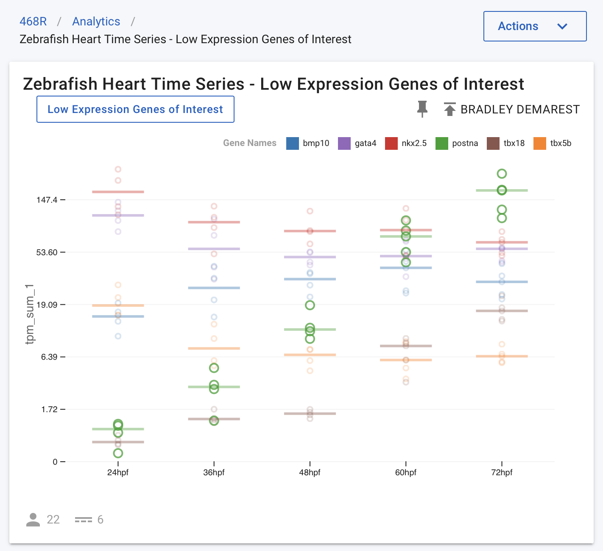
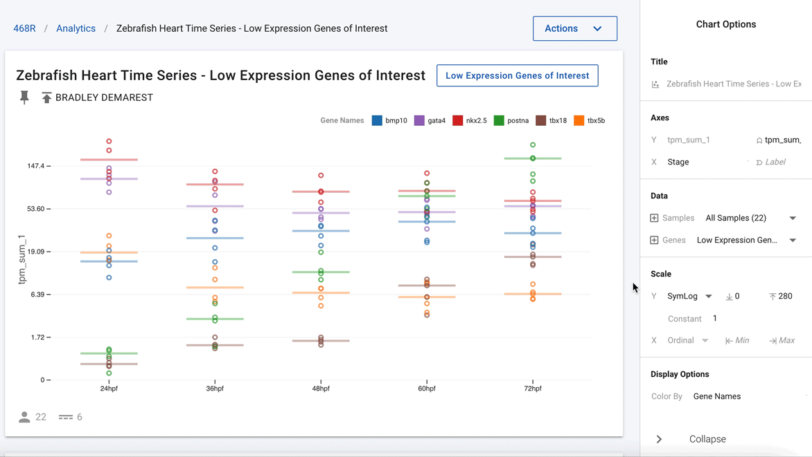

The power of data visualization
Alistair Ward & Bradley Demarest, 2022 August 18
A picture can speak a thousand words, but which picture we use can have a major impact on the conclusions that we draw. In preparing a recent publication for a study investigating post-transcriptional gene regulation during heart development, the authors included the following figure (Figure 1) comparing gene expression for multiple genes, across a series of time points in zebrafish models. In preparing these gene expression charts, the y-scale for each gene is set to the range of values for that gene. This has the advantage that each chart gives a clear view of how expression evolves over the given time series for each gene. A disadvantage is that each gene is plotted using a different scale and comparing data across genes can be tricky. In this case, expression of nkx2.5 appears to decline precipitously after the first time point and then remain stable.
Figure 1. One panel per gene. Y-scale expands to the range of data showing gene expression relative to time points of a single gene.
This data set is hosted at the NHLBI’s Cardiovascular Development Data Resource Center (CDDRC). The University of Utah and Frameshift Labs are collaborating to make this data available to the wider research community using the Mosaic platform. This collaboration is developing visualisation solutions for RNA-Seq data, and when applied to the same time series data, all six genes above are plotted in a single chart as shown in Figure 2.
Figure 2. All genes in the same panel, symlog scale shows gene expression trends relative to multiple genes.
In Figure 2, the y-axis is plotted on a symlog scale so all genes are on the same scale. This plot shows all data points (circles) for all genes, along with the median value for each gene and time point (horizontal lines). In this figure, the postna gene is highlighted to make its data points easier to see (by hovering over the gene in the legend at the top of the chart). When observing this time series data in this form, the publication authors realised that the nkx2.5 expression was quite stable relative to other much more dynamic genes, such as postna.
Figure 3. Easily deselect genes that are not of current interest to show just nkx2.5 and postna.
Going one step further, using the interactivity of the charts, the authors were able to remove all the other genes and highlight just nkx2.5 and postna, as shown in Figure 3. This now clearly shows that postna has a much higher relative change as compared with nkx2.5.
This is a good example of how access to easy-to-use visualisation software connected to complex data types allows users to quickly build and analyse charts for the same data in multiple different ways to better understand the trends and reach improved conclusions.